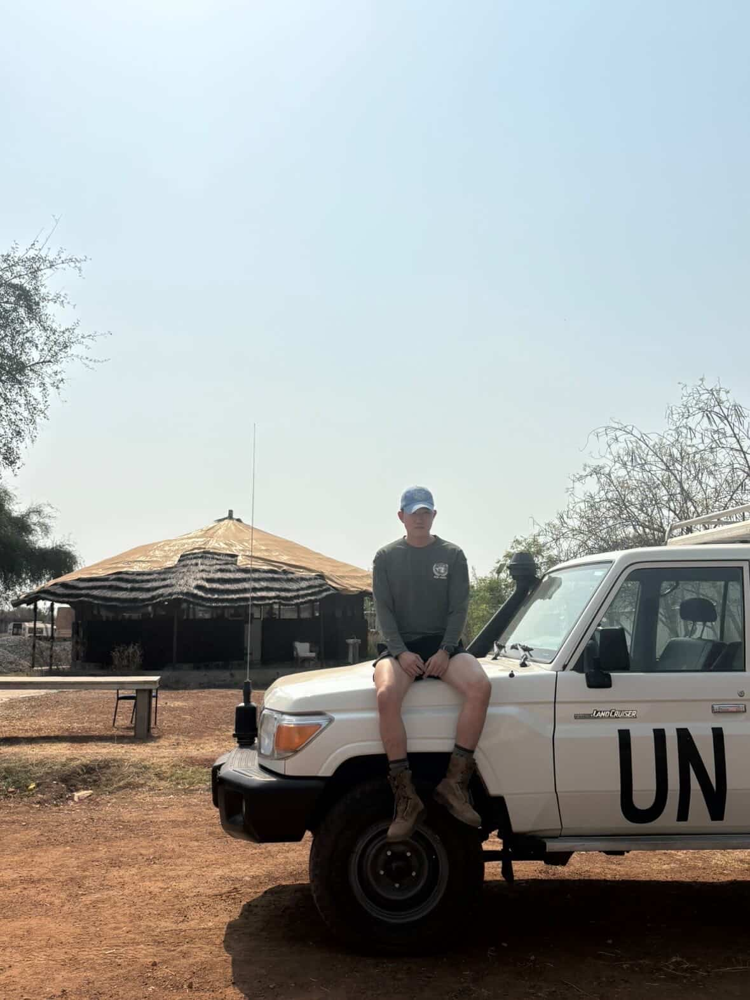
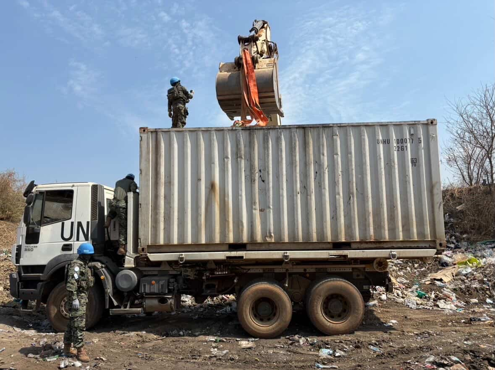
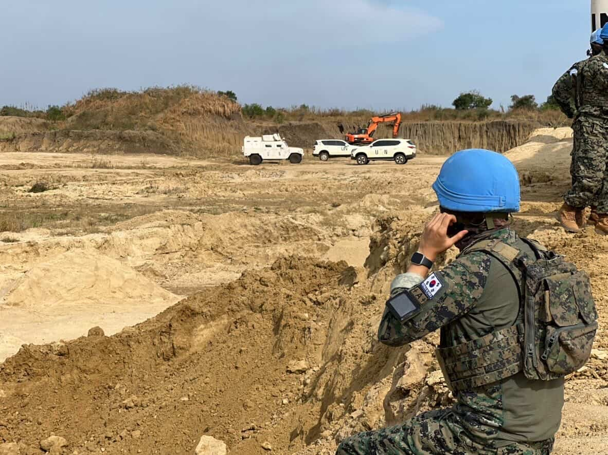

Daily life on a United Nations Mission in South Sudan(UNMISS) base, through the eyes of civil affairs specialist Dylan Rhee of the Korean contingent.


One day, a local man stole a drainage pipe from a project site because it was made of metal he could sell. He ended up selling it, and the pipe was eventually found broken down at someone else's house. We had to wait a month and a half for a replacement, and in the meantime, the roads were completely unusable. To make matters worse, the supply truck carrying the new pipe got raided on its way to us — along with a shipment of food. They robbed the car and took everything. That kind of thing happens all the time out there because there's only one major road connecting the two cities. The replacement truck eventually arrived completely empty.
"My worldview has completely opened up. I got to see parts of the world and meet people I never could have possibly encountered otherwise. These were experiences that were only possible through serving."
— Dylan Rhee, Civil Affairs Specialist, UNMISS